seals <- read.csv(file.choose(), header = T, stringsAsFactors = T, na.strings = "NA")Practical 4 - Group comparisons
Testing for differences between groups
Learning Outcomes (LOs)
Here’s what you should know and be able to do after completing this practical:
LO1: Recall the typical assumptions of t-tests
LO2: Explain the purpose of data transformation
LO3: Explain dependence and independence in data
LO4: Implement t-tests in R
LO5: Interpret and report the output of t-tests
LO6: Implement non-parametric equivalents
LO7: Interpret and report the output of non-parametric equivalents
Tutorial
two-sample t-test
For this tutorial, we’ll work with the “sealDispersal.csv” dataset
This dataset contains data on grey seal (Halichoerus grypus) pups
Specifically, the data represent how far seals travelled (km) when they undertook natal dispersal
This is their “displacement distance”, named “dist” in the spreadsheet
Start by importing the data:
Take an initial look at the data:
names(seals) [1] "id" "sex" "age" "censor" "colony" "dist" head(seals) id sex age censor colony dist
1 1275 <NA> 5 alive ramsey 0.00
2 1104 M 1 dead ramsey 2.16
3 1105 F 1 alive ramsey 0.00
4 1121 F 6 alive skomer 0.00
5 1185 M 1 alive skomer 1.38
6 1122 M 8 alive skomer 0.00tail(seals) id sex age censor colony dist
181 1929 F 21 dead ramsey 141.10431
182 1932 F 1 alive ramsey 0.00000
183 1937 M 3 alive ramsey 0.00000
184 1978 M 7 alive ramsey 0.00000
185 1960 M 30 dead ramsey 3.96155
186 1963 F 9 alive ramsey 16.07533str(seals) 'data.frame': 186 obs. of 6 variables:
$ id : int 1275 1104 1105 1121 1185 1122 1119 1120 1135 1136 ...
$ sex : Factor w/ 2 levels "F","M": NA 2 1 1 2 2 2 2 1 1 ...
$ age : int 5 1 1 6 1 8 4 3 2 2 ...
$ censor: Factor w/ 2 levels "alive","dead": 1 2 1 1 1 1 1 1 1 1 ...
$ colony: Factor w/ 3 levels "npembs","ramsey",..: 2 2 2 3 3 3 3 3 3 3 ...
$ dist : num 0 2.16 0 0 1.38 0 0 0 1.52 1.52 ...summary(seals) id sex age censor colony
Min. :1060 F :99 Min. : 1.000 alive:144 npembs: 24
1st Qu.:1300 M :85 1st Qu.: 2.000 dead : 40 ramsey:128
Median :1478 NA's: 2 Median : 4.000 NA's : 2 skomer: 34
Mean :1511 Mean : 6.145
3rd Qu.:1749 3rd Qu.: 8.000
Max. :1978 Max. :42.000
dist
Min. : 0.00
1st Qu.: 0.00
Median : 0.00
Mean : 43.94
3rd Qu.: 19.92
Max. :964.30 Data exploration
We may be interested to see if there is a difference in dispersal distance between male and female seal pups. In theory, we may not expect there to be because although as adults, grey seals are sexually dimorphic, as pups they aren’t, meaning that both males and females are very similar in size. When it comes to distance travelled, size matters - larger animals can typically travel further. This is known as “allometric scaling” in biology, see here for an example: https://royalsocietypublishing.org/doi/full/10.1098/rsbl.2015.0673
Our research question would hence be something like:
Does natal dispersal distance vary between male and female grey seal pups?
Let’s state some hypotheses:
Null hypothesis: There is no difference in natal dispersal distance between male and female pups
Alternate hypothesis: There is a difference in natal dispersal distance between male and female pups
Note that in this case the alternative hypothesis is not that one sex specifically travels further than the other, it’s just that there is a difference in distance travelled. To analyse this “two-tailed” question, we need a two-tailed test.
As usual, we should should start by plotting our data:
NOTE that when x is categorical, R by default knows to create a boxplot using the plot()function:
plot(seals$dist ~ seals$sex, ylab = "Displacement distance (km)", xlab = "Sex", las = 1)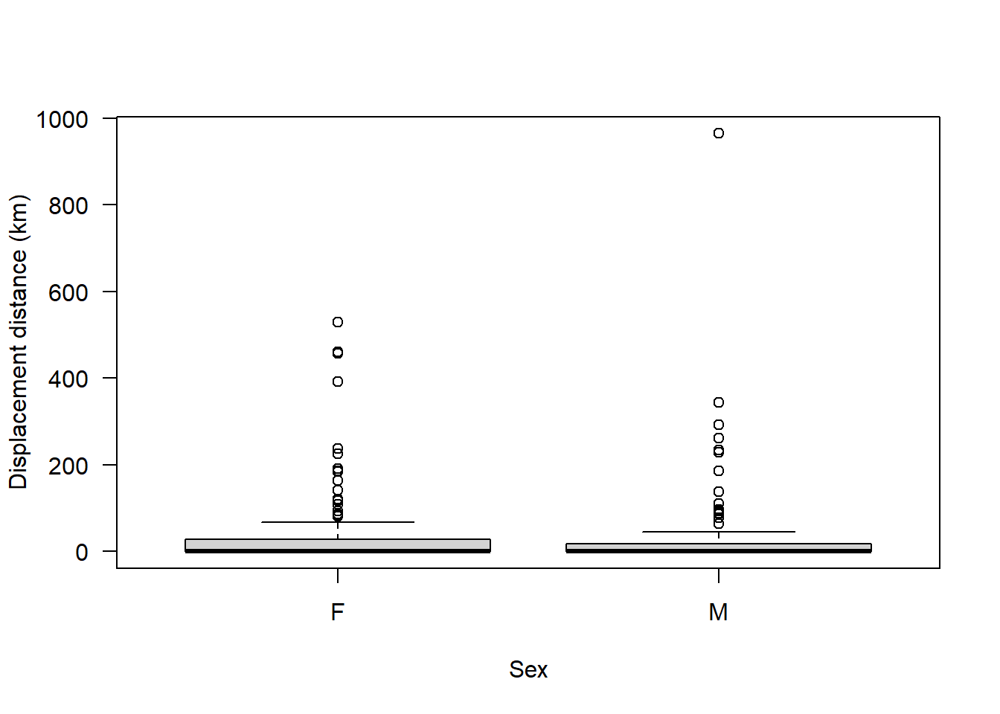
We can explicitly ask for a boxplot() if we want to:
boxplot(seals$dist ~ seals$sex, ylab = "Displacement distance (km)", xlab = "Sex", las = 1)
We can see clearly from this that the majority of animals disperse a relatively short distance but there are a few that disperse a particularly long distance
Let’s see how far the animals disperse:
sort(seals$dist) [1] 0.00000 0.00000 0.00000 0.00000 0.00000 0.00000 0.00000
[8] 0.00000 0.00000 0.00000 0.00000 0.00000 0.00000 0.00000
[15] 0.00000 0.00000 0.00000 0.00000 0.00000 0.00000 0.00000
[22] 0.00000 0.00000 0.00000 0.00000 0.00000 0.00000 0.00000
[29] 0.00000 0.00000 0.00000 0.00000 0.00000 0.00000 0.00000
[36] 0.00000 0.00000 0.00000 0.00000 0.00000 0.00000 0.00000
[43] 0.00000 0.00000 0.00000 0.00000 0.00000 0.00000 0.00000
[50] 0.00000 0.00000 0.00000 0.00000 0.00000 0.00000 0.00000
[57] 0.00000 0.00000 0.00000 0.00000 0.00000 0.00000 0.00000
[64] 0.00000 0.00000 0.00000 0.00000 0.00000 0.00000 0.00000
[71] 0.00000 0.00000 0.00000 0.00000 0.00000 0.00000 0.00000
[78] 0.00000 0.00000 0.00000 0.00000 0.00000 0.00000 0.00000
[85] 0.00000 0.00000 0.00000 0.00000 0.00000 0.00000 0.00000
[92] 0.00000 0.00000 0.00000 0.00000 0.00000 0.00000 0.00000
[99] 0.00000 0.00000 0.00000 0.00000 0.00000 0.00000 0.00000
[106] 0.00000 0.00000 0.16800 0.22800 0.71900 1.38000 1.41000
[113] 1.52000 1.52000 1.52000 1.52000 1.73000 2.16000 3.17000
[120] 3.37000 3.96000 3.96155 4.02000 4.21000 4.57000 4.86000
[127] 6.04000 12.93969 13.49606 15.01505 15.35200 15.38363 15.71496
[134] 16.07533 16.71319 16.78301 17.19455 17.44276 17.84845 20.60682
[141] 20.60682 21.12559 33.92554 36.11548 39.92171 40.64138 44.38348
[148] 53.14825 53.92034 54.84184 60.78953 64.53057 66.55368 78.21101
[155] 81.85702 84.56023 86.31815 86.70399 88.47641 93.56456 93.74547
[162] 97.30561 108.00707 110.96095 117.44083 119.92788 137.21080 141.10431
[169] 163.67832 184.43662 185.15203 185.87670 190.33015 224.41939 227.77765
[176] 233.98984 237.08918 261.17109 261.99485 292.04437 342.87248 392.43563
[183] 456.22910 460.90529 529.76928 964.30412Ah! Many of them have not dispersed at all; their dispersal distance is 0 km.
Given this, we may need to refine our research question. We may be specifically interested in only seals who have undertaken natal dispersal (i.e., moved from their birth site).
If we want to examine this, then we need to perform some subsetting to exclude any individuals who did not disperse.
One way to do that would be like this:
sealSub <- seals[seals$dist > 0, ]Now plot the data again:
boxplot(sealSub$dist ~ sealSub$sex, ylab = "Displacement distance (km)", xlab = "Sex", las = 1)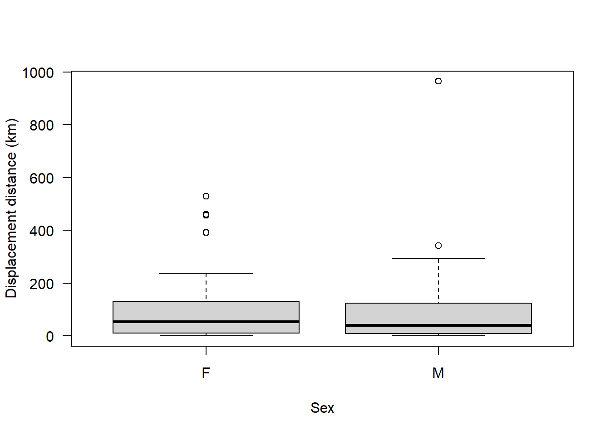
We can still see that most individuals dispersed a relatively short distance, with a few individuals from each sex dispersing extreme distances i.e., there are some outliers. However, these distances aren’t likely to represent errors - grey seal pups can disperse very long distances. Here’s some evidence of that: https://academic.oup.com/icesjms/article/77/5/1762/5824890
So, we shouldn’t rush to exclude these outliers. Let’s leave them in for now.
We can also see already from this boxplot that, on average, it appears there is not much difference between sexes in how far the seals dispersed.
Check assumptions of a t-test:
Assumption 1: y must be continuous (numeric) and x must be categorical (factor) - check using str()
str(sealSub)'data.frame': 79 obs. of 6 variables:
$ id : int 1104 1185 1135 1136 1137 1138 1168 1175 1183 1242 ...
$ sex : Factor w/ 2 levels "F","M": 2 2 1 1 2 1 1 2 2 1 ...
$ age : int 1 1 2 2 7 4 7 4 16 24 ...
$ censor: Factor w/ 2 levels "alive","dead": 2 1 1 1 1 1 1 2 1 1 ...
$ colony: Factor w/ 3 levels "npembs","ramsey",..: 2 3 3 3 3 2 2 2 3 2 ...
$ dist : num 2.16 1.38 1.52 1.52 292.04 ...This assumption is met.
Assumption 2: y must be approximately normally distributed for each group: check using hist() and qqnorm()
Start with males:
par(mfrow=c(1,2))
hist(sealSub$dist[sealSub$sex=="M"], main = "Histogram", las = 1, xlab = "Dispersal distance (km)")
qqnorm(sealSub$dist[sealSub$sex=="M"]); qqline(sealSub$dist[sealSub$sex=="M"])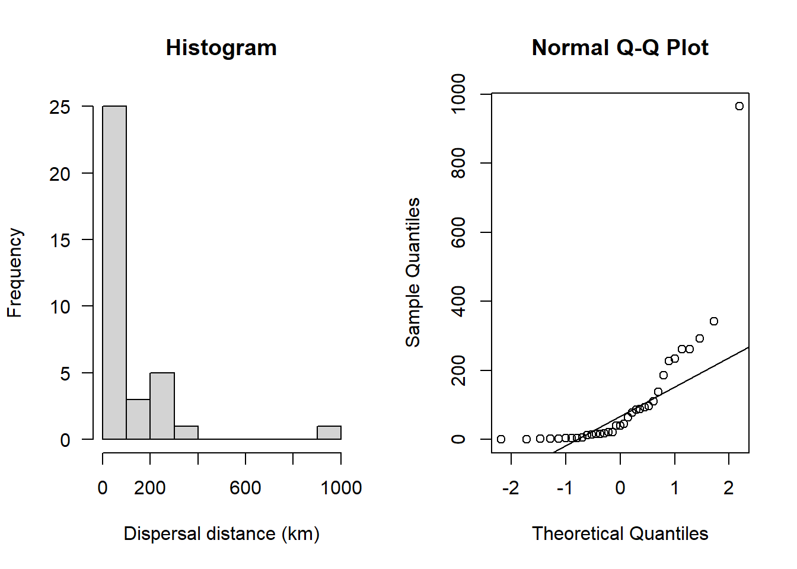
This definitely doesn’t look normal. The historgram does not look like a bell-shaped curve and the Q-Q plot shows an obvious curved pattern in the data.
What about the females?
hist(sealSub$dist[sealSub$sex=="F"], main = "Histogram", las = 1, xlab = "Dispersal distance (km)")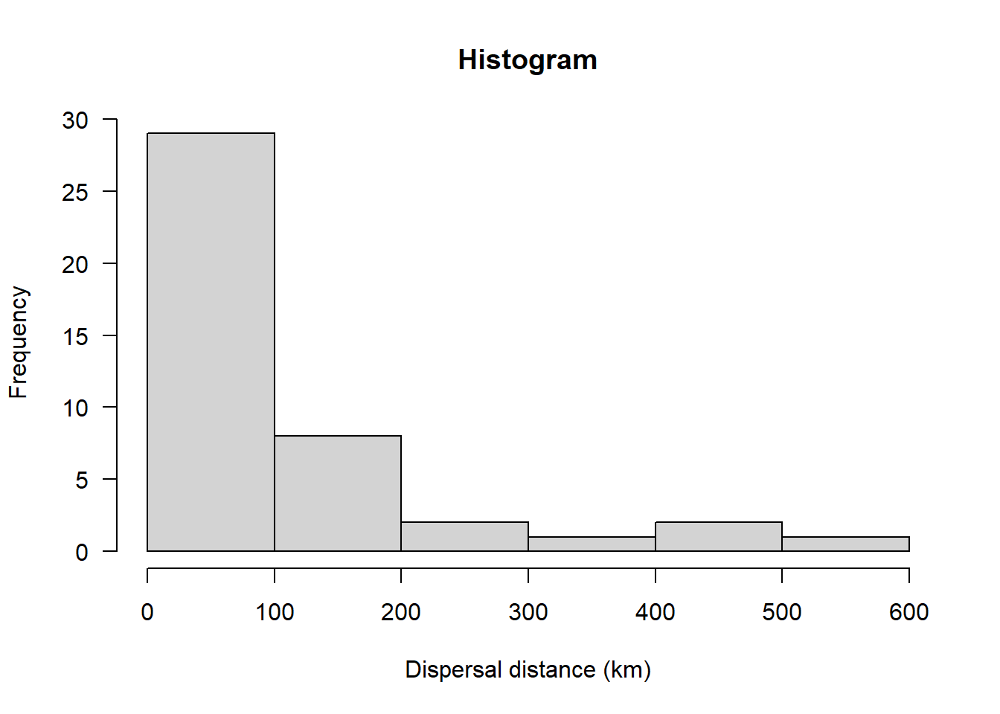
qqnorm(sealSub$dist[sealSub$sex=="F"]); qqline(sealSub$dist[sealSub$sex=="F"])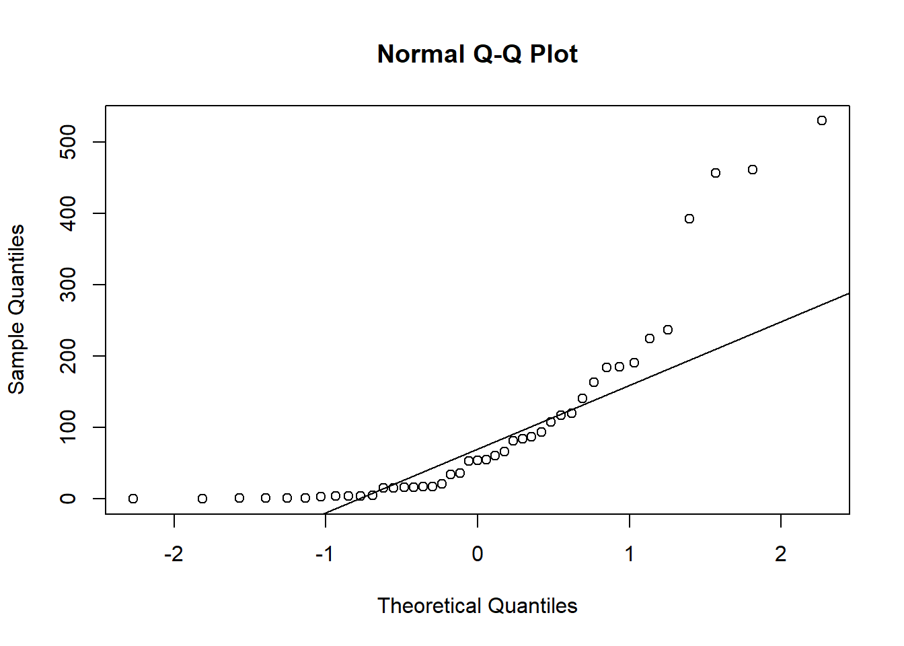
Again, not normal.
We could consider at this point switching to a non-parametric test, but remember that these tests have less Power, so if we can stick with the parametric test, we should.
Let’s try performing a transformation of our data to see if it follows a normal distribution
Start with a log10 transformation:
sealSub$logDist <- log10(sealSub$dist)And re-check normality assumption, starting with males:
hist(sealSub$logDist[sealSub$sex=="M"], main = "Histogram", las = 1, xlab = "log10 dispersal distance (km)")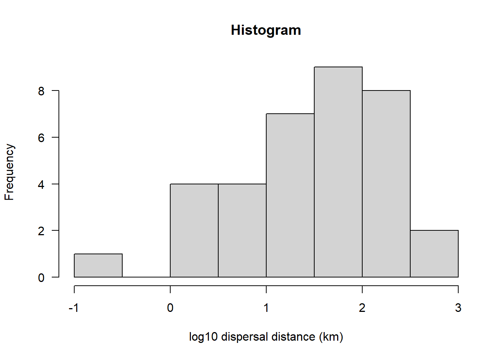
qqnorm(sealSub$logDist[sealSub$sex=="M"], las = 1); qqline(sealSub$logDist[sealSub$sex=="M"])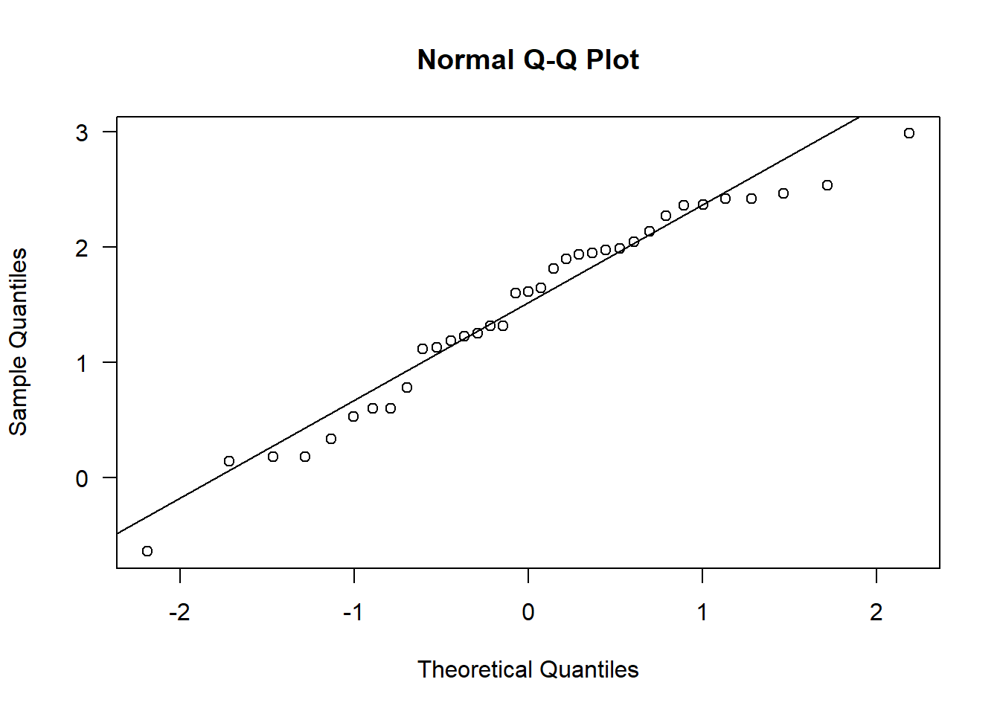
This now looks approximately normal (the Q-Q plot looks particularly close to normal)
And how about for female seals:
hist(sealSub$logDist[sealSub$sex=="F"], main = "Histogram", las = 1, xlab = "log10 dispersal distance (km)")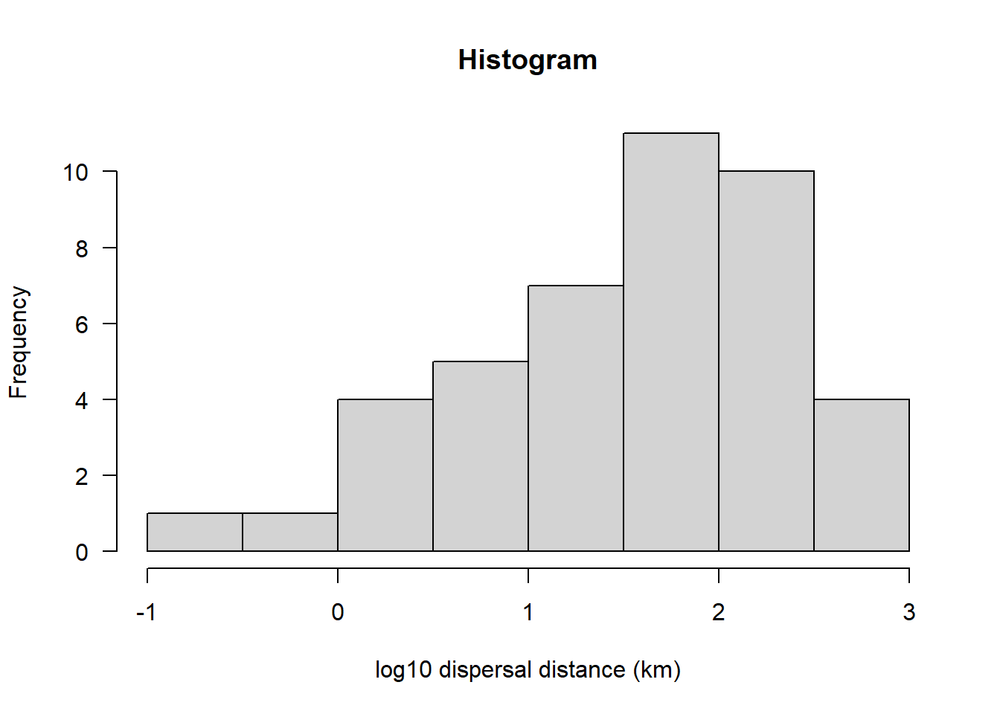
qqnorm(sealSub$logDist[sealSub$sex=="F"], las = 1); qqline(sealSub$logDist[sealSub$sex=="F"])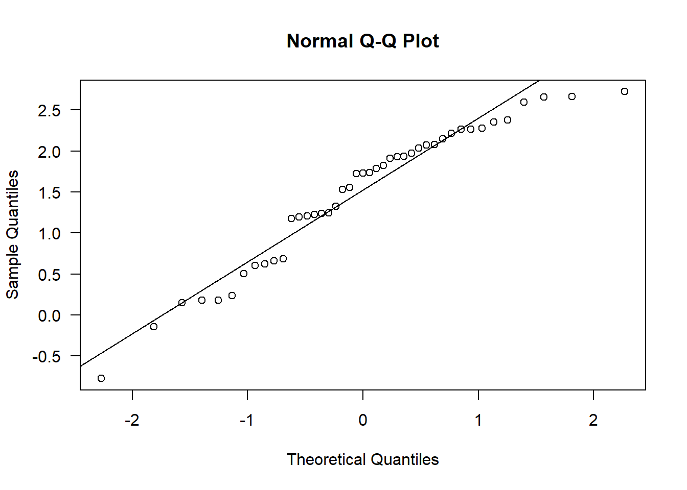
Again, this isn’t perfect, but it’s very close to normal, hence approximately normal
So, we have now met Assumption 2.
Assumption 3: There should be no significant outliers
From this point on, we need to continue evaluating the log10 distances
par(mfrow=c(1,1))
boxplot(sealSub$logDist ~ sealSub$sex, ylab = "log10 displacement distance (km)", xlab = "Sex", las = 1)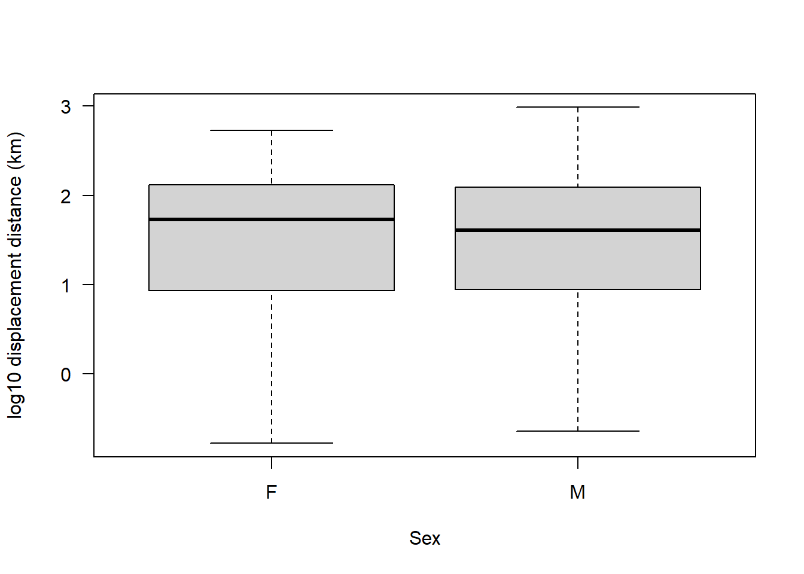
No outliers on a log10 scale.
Data transformations:
This might be a good opportunity to explain what is happening when we transform data.
A data transformation doesn’t change the data itself — it just changes the scale we use to view it. Think of it like switching from measuring distance in metres to kilometres: the numbers look different, but the underlying reality is the same. The log10 transformation works similarly, except it’s useful when changes happen by orders of magnitude rather than by equal steps.
An example could be dosages of painkillers, like paracetamol. If you take 1 mg of paracetamol, you probably won’t feel a benefit. Doubling it to 2 mg or 3 mg won’t help much either — but increasing it to 10 mg might. The drug’s effect becomes noticeable when the dose increases by a factor of 10, not by 1 mg at a time. On a log10 scale, going from 1 mg to 10 mg to 100 mg becomes 1 to 2 to 3 — now the pattern of meaningful change is clearer. Transformations like log10 simply rescale the data so that the underlying relationships become easier to interpret.
The reason the log10 transformation is a good one for seal displacement distance is because displacement distance often spans orders of magnitude: some pups move only a few kilometres, while others travel hundreds. On the raw scale, those long-distance movers look like extreme outliers, stretching the distribution to the right and making it skewed. But biologically, these aren’t really “outliers” — they just reflect multiplicative rather than additive variation (e.g. some pups move 10x or 100x farther than others). Taking the log10 compresses those large distances so that multiplicative differences (x10, x100) become additive ones (+1, +2), making the distribution symmetric and roughly normal. In short, the log10 scale reflects how dispersal actually varies — proportionally or exponentially — rather than linearly.
A transformation like log10 doesn’t change the information in the data — it changes the scale we use to express it. The relationships, ranks, and ratios between values are preserved, just represented differently. For example, 10 km is still 10x farther than 1 km whether you express it as 10 vs. 1 (raw) or 1 vs. 0 (log10). What changes is how we see the pattern: on the raw scale, extreme values dominate; on the log scale, differences in orders of magnitude become evenly spaced. So you’re not altering the truth of the data — you’re translating it into a scale that better matches how the phenomenon behaves.
This is the same reason why pH is measured on a log10 scale.
Acidity is based on the concentration of hydrogen ions (H⁺) in a solution, which can vary over many orders of magnitude — from about 1 mole per litre in strong acid to 0.000000001 moles per litre in strong alkaline Representing those values on a raw scale would be messy and unintuitive (e.g. 1 vs. 0.000000001). So instead, we use a log10 scale to compress that huge range into something manageable and evenly spaced. pH is defined as \(pH = -\log_{10}[H^+]\), meaning each step on the pH scale represents a tenfold change in acidity. A solution with pH 3 is ten times more acidic than pH 4, and 100 times more acidic than pH 5. In other words, the log scale doesn’t change the underlying chemistry — it just expresses it in a scale that reflects how acidity actually varies (by factors of ten) and makes it easier to interpret.
Back to the analysis!
Let’s now check the fourth assumption of a t-test.
Assumption 4: The groups should have equal variance.
There are a few ways to check this. First, let’s simply plot our data:
boxplot(sealSub$logDist ~ sealSub$sex, las = 1, xlab = "Sex", ylab = "log10 dispersal distance (km)")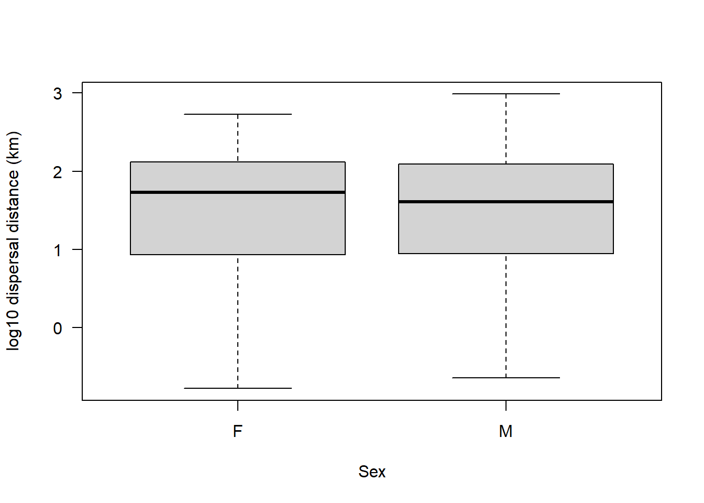
If it looks like the boxes and whiskers are as wide in each sex, then that would suggest that the groups have equal variance.
We can also of course, calculate the variance for each group:
var(sealSub$logDist[sealSub$sex=="M"], na.rm = T)[1] 0.7280954var(sealSub$logDist[sealSub$sex=="F"], na.rm = T)[1] 0.7352134Looks almost exactly equal.
We could also calculate the ratio of variance.
This is simply one variance divided by the other. The answer should be close to 1 if they are equal (i.e. a 1:1 ratio):
var(sealSub$logDist[sealSub$sex=="M"], na.rm = T) / var(sealSub$logDist[sealSub$sex=="F"], na.rm = T)[1] 0.9903185Looks like these two groups have almost identical variance.
If we want to be even more confident that this is the case, we could conduct a variance test.
Note that the only assumptions of a variance test are that the data are independent, continuous, and normal. We know already from earlier checks that all three of these assumptions are met.
var.test(sealSub$logDist ~ sealSub$sex)
F test to compare two variances
data: sealSub$logDist by sealSub$sex
F = 1.0098, num df = 42, denom df = 34, p-value = 0.9855
alternative hypothesis: true ratio of variances is not equal to 1
95 percent confidence interval:
0.521631 1.911454
sample estimates:
ratio of variances
1.009776 For a variance test, the null hypothesis is that the groups have equal variance
Hence if we got a p-value < 0.05 we would reject that null hypothesis.
On the contrary, if our groups do have equal variance we would get p > 0.05
That’s what we have here, so this assumption is satisfied.
Assumption 5: Your data must be independent (no one observation affects another)
We don’t need to test this in R — it’s about understanding how the data were collected and the biology of the system. In this case, it’s reasonable to assume that one animal’s dispersal distance doesn’t directly affect another’s.
Implement the t-test:
All assumptions have been checked, so we can run a parametric analysis.
NOTE: In R, the t-test function is simply t.test()
There are a couple of important arguments to specify:
var.equal = TRUE- Set this to TRUE if the variances are equal between the groups (they are here). By default,t.test()assumes unequal variances and performs a Welch’s t-test if not specified.alternative = "two.sided"- This specifies a two-tailed test.We are testing for any difference between male and female seals, without predicting which group has the higher dispersal distance.
t.test(logDist ~ sex, data = sealSub, var.equal = TRUE, alternative = "two.sided")
Two Sample t-test
data: logDist by sex
t = 0.053474, df = 76, p-value = 0.9575
alternative hypothesis: true difference in means between group F and group M is not equal to 0
95 percent confidence interval:
-0.3775214 0.3983525
sample estimates:
mean in group F mean in group M
1.485623 1.475208 Interpret and report the output:
We can see from this output that the mean (log10) dispersal distance for females is 1.465623 km, and for males it is 1.474208 km. This test output doesn’t tell us explicitly what the difference is between these two numbers, so we must calculate it manually:
meanM <- mean(sealSub$logDist[sealSub$sex=="M"], na.rm = T)
meanF <- mean(sealSub$logDist[sealSub$sex=="F"], na.rm = T)
abs(meanM - meanF)[1] 0.0104156Note we use the function abs() to determine the absolute difference (i.e. regardless of whether that number is positive or negative, we are just interested in its magnitude) in log10 km. We should also calculate the standard error of each of these estimated means.
If you don’t remember what standard error is, look back at the “Basics in R” script.
std.error <- function(x) sd(x, na.rm=T)/sqrt(length(x))Males then females:
std.error(sealSub$logDist[sealSub$sex=="M"])[1] 0.1422142std.error(sealSub$logDist[sealSub$sex=="F"])[1] 0.1292648Now that we have these values, we can, together with the output from the t.test(), write up our result:
Our two-tailed, two-sample t-test indicated that there was no difference in the mean dispersal distance (log10 km) between male and female grey seal pups (t = 0.05, df = 76, p = 0.96). Specifically, the mean ± SE (log10 km) dispersal distance for males was 1.47 ± 0.14, whilst for females it was 1.49 ± 0.13, representing a difference of 0.02 (95% CI: -0.38 to 0.40; log10 km).
Two-tailed, One-sample t-test
Now let’s look at a one-sample t-test. Remember, this is a t-test that takes one group of data and compares it to a known or theoretical value.
Let’s assume that previous research has indicated that seals disperse an average (mean) distance (on a log10 km scale) of 1.5.
We could use a one-sample t-test here to test whether the mean dispersal distance of our sample of pups differs to this “known” value.
In a one-sample t-test, the null hypothesis is that the sample mean is equal to the known or hypothesized mean. The alternative hypothesis is that the two are different.
Let’s create an object that stores the “known” value from previous research:
knownVal <- 1.5For a one-sample t-test, the only assumptions are that the observations in your sample are continuous, independent, and approximately normally distributed.
In the previous test we looked at each sex separately, but in this research question we aren’t looking to distinguish between sex, so we can look at all seals together.
However, this does mean we need to check whether when we look at all of the seals together the log10 dispersal distance is still approximately normally distributed:
par(mfrow=c(1,2))
hist(sealSub$logDist, main = "Histogram", las = 1)
qqnorm(sealSub$logDist, las = 1); qqline(sealSub$logDist)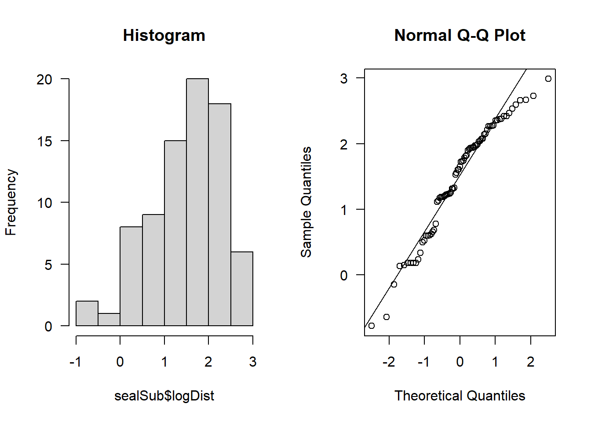
It looks approximately normal.
Let’s visualise our sample against the known value:
par(mfrow=c(1,1))
boxplot(sealSub$logDist, knownVal, ylab = "log10 displacement distance (km)", xlab = "", names = c("Sample", "Known value"), las = 1)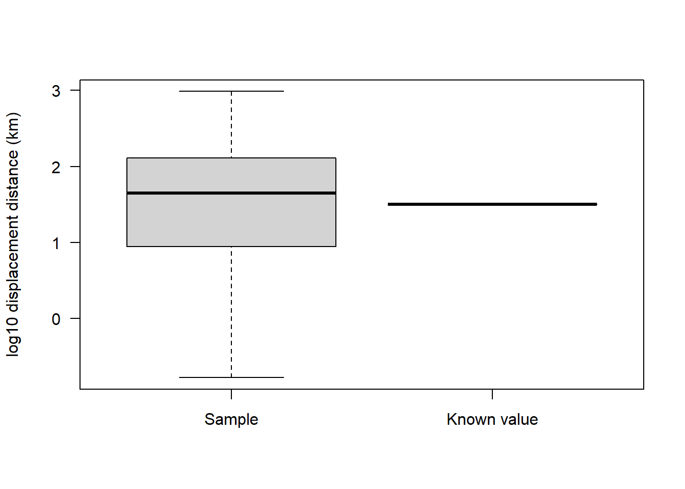
And now let’s conduct the one-sample t-test.
Note that the function for this is the same as previously i.e., t.test(), but this time we need to specify a value for something called mu.
mu represents the known (or hypothesized) value that you are comparing your sample to.
Remember also that in this case our sample consists of only a single group. So we don’t need to worry about setting var.equal = TRUE, because we aren’t comparing two groups - we are simply comparing one group to a known or theoretical value (mu).
We leave alternative = "two.sided" because we aren’t concerned with whether mu is larger than the sample, or vice versa:
t.test(sealSub$logDist, mu = knownVal, alternative = "two.sided")
One Sample t-test
data: sealSub$logDist
t = -0.23945, df = 78, p-value = 0.8114
alternative hypothesis: true mean is not equal to 1.5
95 percent confidence interval:
1.287913 1.666546
sample estimates:
mean of x
1.47723 In this case, our p-value is greater than 0.05, so we fail to reject the null hypothesis (i.e. we stick with it).
In other words, the mean dispersal distance in our sample of grey seal pups appears to be consistent with the mean distance found in previous research.
Here’s how we could report this result:
A one-sample t-test was used to determine whether the mean log10 dispersal distance of grey seal pups differed from a previously reported mean of 1.5 log10 km. The test indicated no significant difference (t = -0.24, df = 78, p = 0.81). The mean log10 dispersal distance in our sample was 1.48 (95% CI: 1.29 to 1.67), suggesting that the dispersal distances in our sample are consistent with previous research.
Welch’s t-test:
The Welch’s t-test is a two-sample t-test used when variances are unequal.
For this example, we’re going to use some simulated Alzheimer’s data again:
set.seed(5)
Alzheimers <- data.frame(neurons = c(rnorm(100, 20, 2), rnorm(100, 21, 6)), group = rep(c("Asymptomatic","Symptomatic"), each = 100), sex = c(rep("M", 50), rep("M", 50), rep("F", 50), rep("F", 50)), age = round(rnorm(200, 70, 5), 0))We want to see if there is a difference in neuron cell density between symptomatic and asymptomatic patients:
boxplot(neurons ~ group, data = Alzheimers, xlab = "Patient group", ylab = "Neuron cell density (M/g)", las = 1)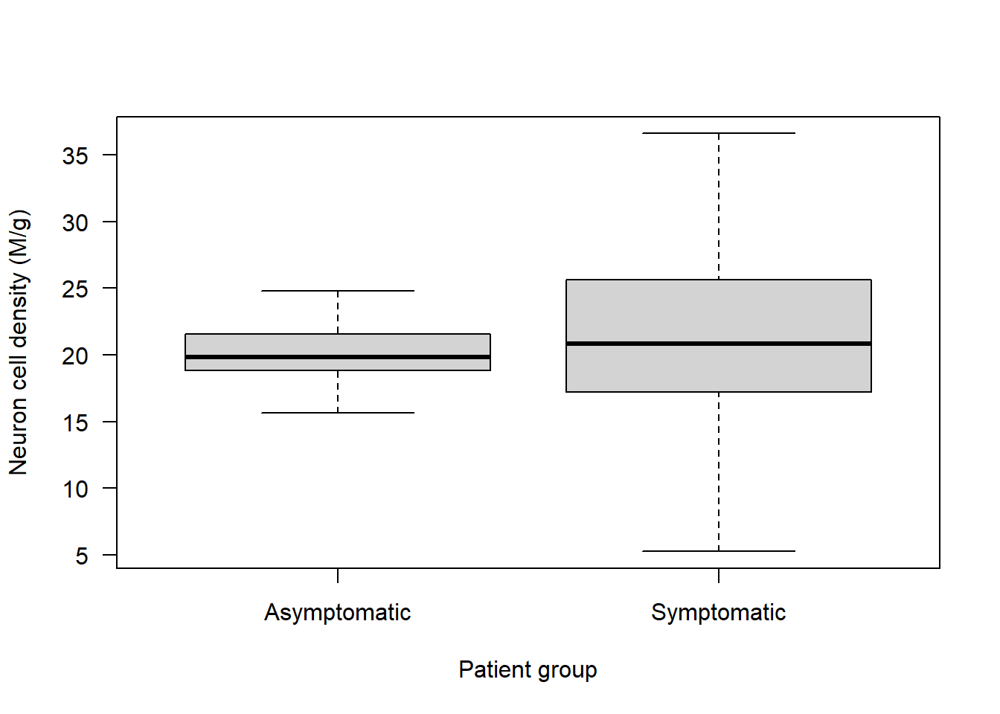
Remember to check assumptions:
Assumption 1: Data are continuous - we know that’s the case.
Assumption 2: Data are approximately normal in each group. Check with visualisations:
Check asymptomatic patients:
par(mfrow=c(1,2))
hist(Alzheimers$neurons[Alzheimers$group=="Asymptomatic"], main = "Asymptomatic", las = 1, xlab = "Neuron cell density (M/g)")
qqnorm(Alzheimers$neurons[Alzheimers$group=="Asymptomatic"], las = 1)
qqline(Alzheimers$neurons[Alzheimers$group=="Asymptomatic"])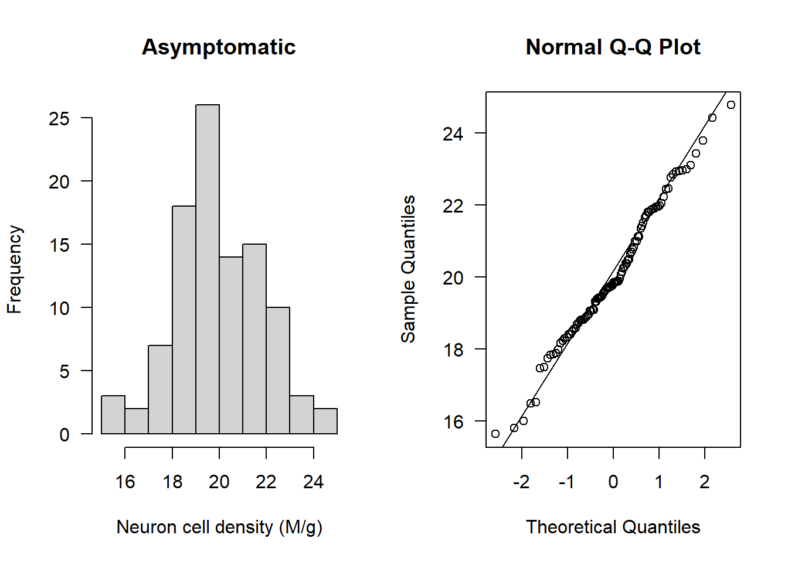
Check symptomatic patients:
hist(Alzheimers$neurons[Alzheimers$group=="Symptomatic"], main = "Symptomatic", las = 1, xlab = "Neuron cell density (M/g)")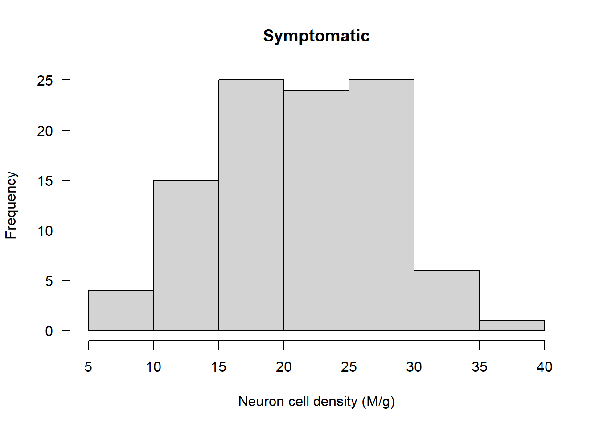
qqnorm(Alzheimers$neurons[Alzheimers$group=="Symptomatic"], las = 1)
qqline(Alzheimers$neurons[Alzheimers$group=="Symptomatic"])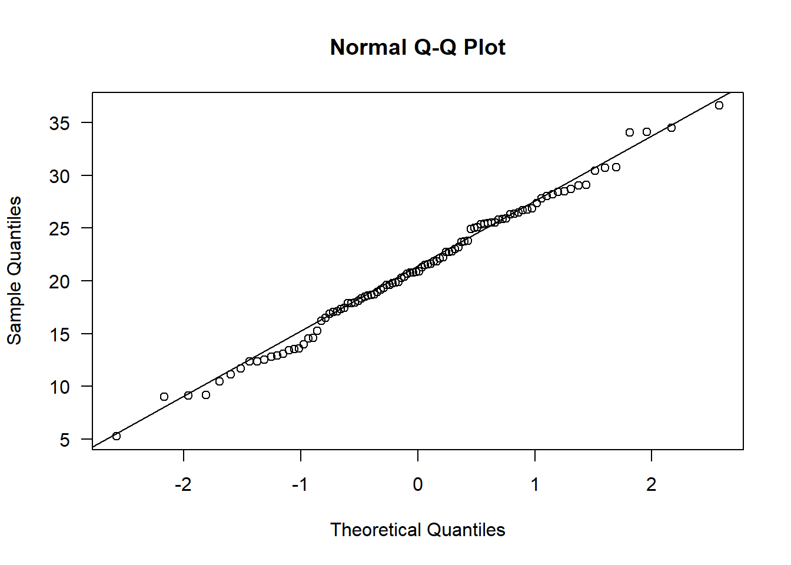
The data appear normal. Let’s check next for outliers:
par(mfrow=c(1,1))
boxplot(Alzheimers$neurons ~ Alzheimers$group, las = 1, main = "", ylab = "Neuron cell density (M/g)", xlab = "Patient group")No obvious outliers to consider.
Are the variances equal? From the boxplot it looks like they aren’t!
var(Alzheimers$neurons[Alzheimers$group=="Asymptomatic"])[1] 3.574251var(Alzheimers$neurons[Alzheimers$group=="Symptomatic"])[1] 39.40252The symptomatic group have more than 10 times the variance that the asymptomatic group has!
var.test(neurons ~ group, data = Alzheimers)
F test to compare two variances
data: neurons by group
F = 0.090711, num df = 99, denom df = 99, p-value < 2.2e-16
alternative hypothesis: true ratio of variances is not equal to 1
95 percent confidence interval:
0.06103429 0.13481809
sample estimates:
ratio of variances
0.09071123 And the variance test indicates the variances are significantly different (the p-value here is extremely small).
If you wanted to, you could at this point try some transformations to see if you can make it so that there is equal variance in neuron cell density across the two groups.
Or, you can just use the Welch’s t-test. This test is still a parametric one, because it still assumes the data follow a normal distribution in each group. It’s just that this test has relaxed the assumption of equal variance.
Implement the Welch’s t-test:
t.test(neurons ~ group, data = Alzheimers, alternative = "two.sided", var.equal = FALSE)
Welch Two Sample t-test
data: neurons by group
t = -1.58, df = 116.81, p-value = 0.1168
alternative hypothesis: true difference in means between group Asymptomatic and group Symptomatic is not equal to 0
95 percent confidence interval:
-2.3341297 0.2625443
sample estimates:
mean in group Asymptomatic mean in group Symptomatic
20.06327 21.09906 Note that the code above is the same as for the two-sample t-test, except we now specify var.equal = FALSE
To write up our results, we would still want to calculate the SE for each group:
std.error(Alzheimers$neurons[Alzheimers$group=="Asymptomatic"])[1] 0.1890569std.error(Alzheimers$neurons[Alzheimers$group=="Symptomatic"])[1] 0.6277142A Welch’s two-sample t-test was used to compare neuron cell density (million cells per gram) between asymptomatic and symptomatic individuals. There was no significant difference between the groups (t = -1.58, df = 116.8, p = 0.12). The mean ± SE neuron cell density was 20.06 ± 0.19 million/g in the asymptomatic group and 21.10 ± 0.63 million/g in the symptomatic group, with a 95% confidence interval for the difference ranging from -2.33 to 0.26 million/g.
Paired t-test
Also known as a dependent-samples t-test, this t-test is used when there is dependence between the two groups of observations.
For example, imagine we give a drug to patients and measure their diastolic blood pressure before and after taking the drug. The measurements are dependent because each individual’s readings are linked: someone with a high initial blood pressure is likely to have a relatively high post-treatment reading as well. The paired t-test accounts for this within-subject dependence.
Let’s simulate some data from 50 patients:
set.seed(13)Simulate “before” blood pressure (normal distribution around 80 mmHg)
before <- rnorm(50, mean = 80, sd = 10)Simulate “after” blood pressure - let’s imagine average bp is reduced by 10 mmHg:
after <- rnorm(50, mean = 75, sd = 10)Combine into dataframe with patient ID:
data <- data.frame(ID = rep(1:50, times = 2), dbp = c(before, after), time = rep(c("before", "after"), each = 50))Let’s take a look at the data:
head(data) ID dbp time
1 1 85.54327 before
2 2 77.19728 before
3 3 97.75163 before
4 4 81.87320 before
5 5 91.42526 before
6 6 84.15526 beforeNow plot the boxplot:
boxplot(data$dbp ~ data$time, xlab = "Timepoint", ylab = "Diastolic blood pressure (mmHg)")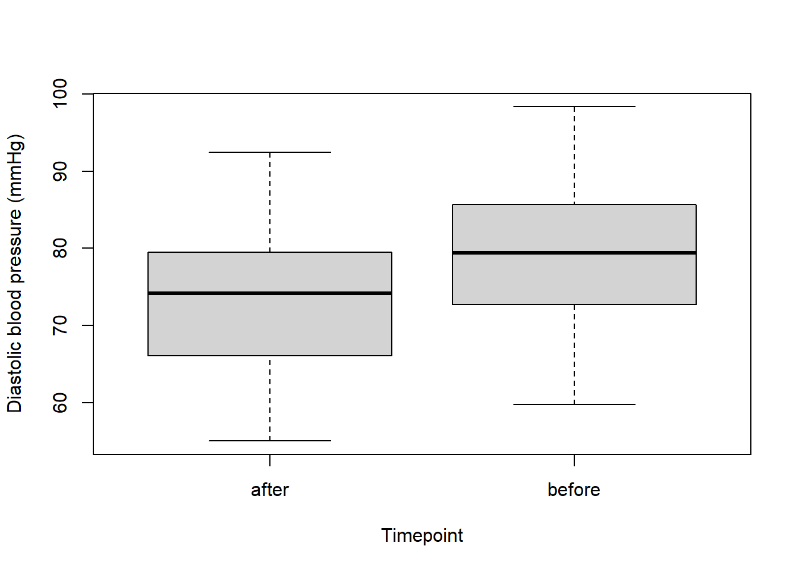
To make the “before” sit on the left of the boxplot and “after” sit on the right, we can change the order that R recognises them in:
data$time <- factor(data$time, levels = c("before", "after"))Now try plotting again:
boxplot(data$dbp ~ data$time, xlab = "Timepoint", ylab = "Diastolic blood pressure (mmHg)", names = c("Before", "After"))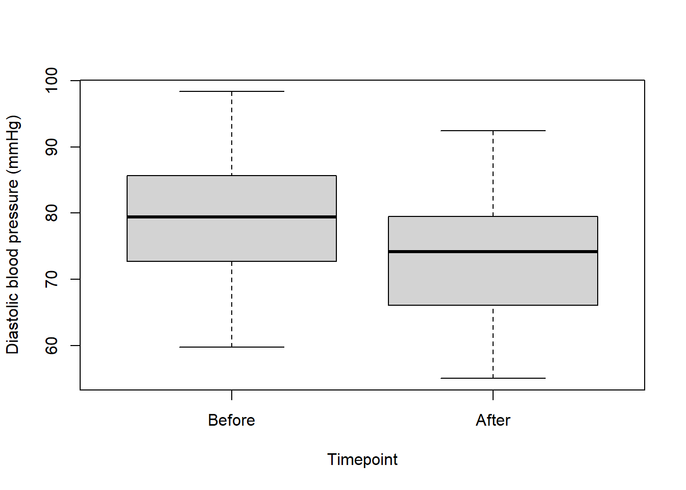
Let’s check our assumptions:
Assumption 1: Data are continuous
Yes, we know this is the case.
Assumption 2: Data are made up of paired observations
We know this is the case because it’s a before and after experiment on the same group of patients.
Assumption 3: There is independence of the paired observations - in other words no one pair of observations affects any other.
We can assume this is true in this case because in most cases where drugs are administered, patients don’t know the identities of other patients, so wouldn’t be likely to affect their treatment.
Assumption 4: The differences between paired observations are approximately normally distributed.
This fourth assumption is a little different to what we’ve seen before. Essentially we need to take the difference between before and after for each patient, and then see if that is normally distributed. It’s quite straightforward to do. We just subtract the after from the before, and then plot a histogram of these values:
diff <- data$dbp[data$time=="before"] - data$dbp[data$time=="after"]
par(mfrow=c(1,2))
hist(diff, main = "Histogram", las = 1)
qqnorm(diff, las = 1); qqline(diff)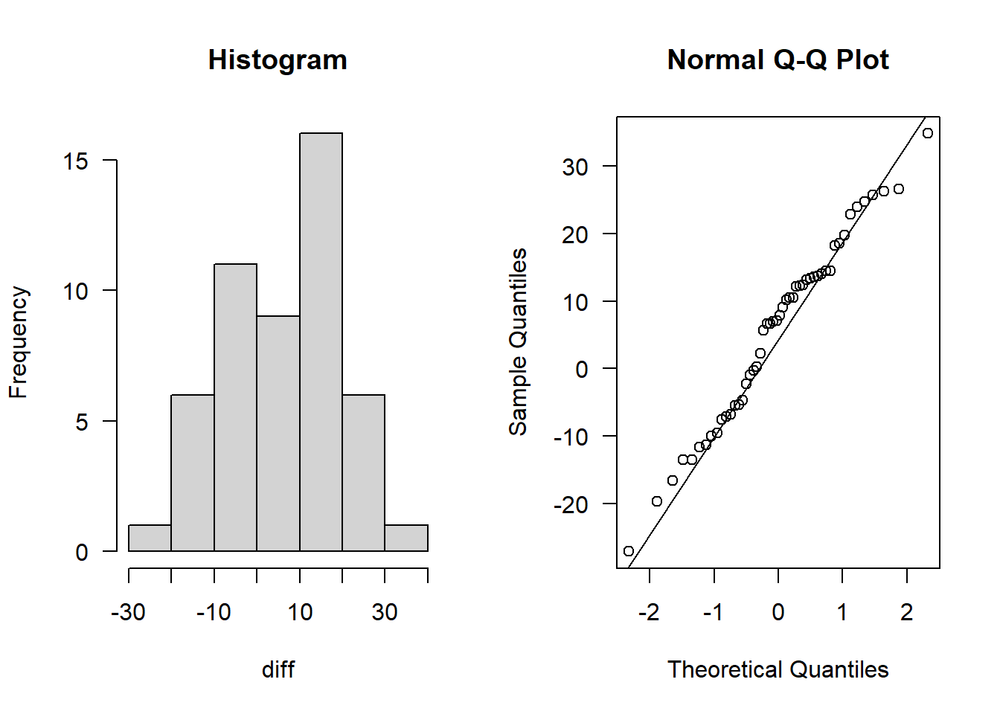
This definitely looks normally distributed.
And that’s it for Paired t-test assumptions (there is no assumption of equal variance). This is because the test is based on the differences within each pair, so it only uses the variance of the differences.
Let’s perform the Paired t-test:
I always like to plot the data again before running a test, just so when I see the output from the test I can also see the data:
par(mfrow=c(1,1))
boxplot(data$dbp ~ data$time, xlab = "Timepoint", ylab = "Diastolic blood pressure (mmHg)", names = c("Before", "After"))Once again it’s the same t.test() function, but now setting paired = TRUE:
t.test(data$dbp[data$time=="before"], data$dbp[data$time=="after"], paired = TRUE, alternative = "two.sided")
Paired t-test
data: data$dbp[data$time == "before"] and data$dbp[data$time == "after"]
t = 2.924, df = 49, p-value = 0.00522
alternative hypothesis: true mean difference is not equal to 0
95 percent confidence interval:
1.785060 9.631205
sample estimates:
mean difference
5.708133 Once more, you need to calculate standard error.
In fact, for paired analyses you should calculate the SE of the differences between before and after:
std.error(diff)[1] 1.95219If you wanted to, you could also calculate the SE for each timepoint:
std.error(data$dbp[data$time=="before"])[1] 1.378942std.error(data$dbp[data$time=="after"])[1] 1.321624Now you have a go at writing up the results!
One-tailed test
A one-tailed test assesses whether a difference exists in a specific direction, rather than just any difference as in a two-tailed test.
We’ll use the blood pressure data we just simulated to illustrate this.
We don’t need to repeat all of the assumption checks we did previously; we just need to focus on the research question.
Suppose we are specifically interested in whether the drug reduces blood pressure.
We can perform the paired t-test like this:
t.test(data$dbp[data$time=="after"], data$dbp[data$time=="before"], paired = TRUE, alternative = "less")
Paired t-test
data: data$dbp[data$time == "after"] and data$dbp[data$time == "before"]
t = -2.924, df = 49, p-value = 0.00261
alternative hypothesis: true mean difference is less than 0
95 percent confidence interval:
-Inf -2.435187
sample estimates:
mean difference
-5.708133 The key to getting the order of the variables the correct way round in the one-tailed test is by thinking of the following sentence:
The first variable is “less/greater” than the second.
So if you wanted to find out if after is less than before, you need to put after first and before second, with an alternative = "less".
Let’s think about the hypotheses in this case:
Null hypothesis (H0): There is no difference in diastolic blood pressure before and after the drug.
Alternative hypothesis (H1): The diastolic blood pressure after the drug is lower than before the drug.
So with a p-value < 0.05, we conclude that the blood pressure is lower after the drug.
And we can also see from the output of that test that on average it’s 5.7 mmHg lower after compared to before.
Don’t forget the SE of the differences:
std.error(diff)[1] 1.95219Non-parametric version of a t-test
Imagine we go out and count the number of insects in different habitats:
set.seed(5)
maize <- rpois(100, 6)
wheat <- rpois(100, 2)We want to test to see if there is a difference in the number of insects in each habitat:
boxplot(maize, wheat, xlab = "Habitat", ylab = "Number of insects")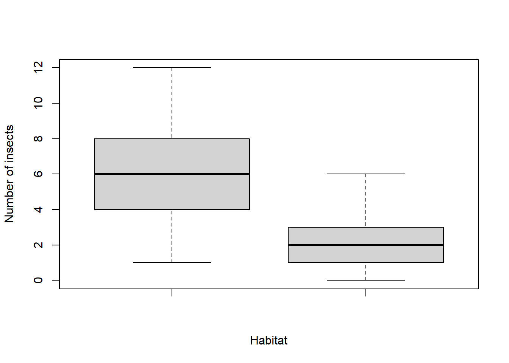
Check assumptions:
par(mfrow=c(1,2))
hist(maize)
qqnorm(maize); qqline(maize)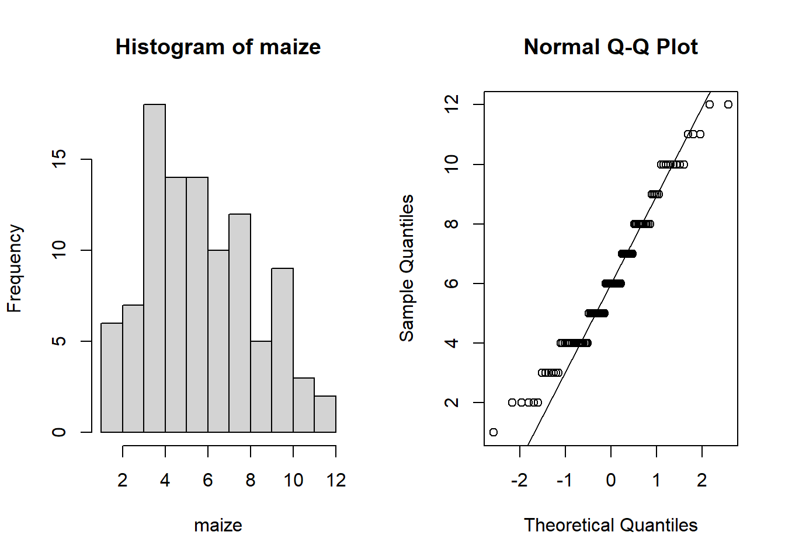
hist(wheat)
qqnorm(wheat); qqline(wheat)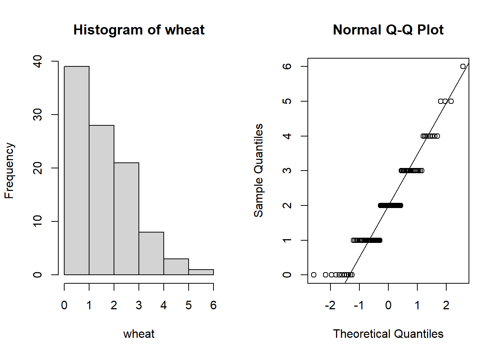
These really don’t appear normal (the data appear to be “binned” into distinct values).
In fact, when we count things we end up with whole numbers (integers) and therefore it tends to be the case that data don’t typically follow a normal distribution.
var(wheat)[1] 1.69697var(maize)[1] 6.519596var(wheat)/var(maize)[1] 0.2602876var.test(wheat, maize)
F test to compare two variances
data: wheat and maize
F = 0.26029, num df = 99, denom df = 99, p-value = 1.114e-10
alternative hypothesis: true ratio of variances is not equal to 1
95 percent confidence interval:
0.1751323 0.3868482
sample estimates:
ratio of variances
0.2602876 And they almost certainly don’t have equal variance.
Given that these are count data, and given that they violate both the assumptions of normality and equal variance, we would not be able to perform a parametric test and we would struggle to transform them in some way to meet the assumptions.
Hence we would need to resort to a non-parametric test.
The non-parametric equivalent to a two-sample t-test is called a Mann-Whitney U test.
It is also known as a “Wilcoxon rank sum test”.
To perform this test we use the wilcox.test() function in R:
wilcox.test(maize, wheat, paired = F, alternative = "two.sided", conf.int = T)
Wilcoxon rank sum test with continuity correction
data: maize and wheat
W = 9346.5, p-value < 2.2e-16
alternative hypothesis: true location shift is not equal to 0
95 percent confidence interval:
3.000060 4.999984
sample estimates:
difference in location
3.999952 The conf.int = T tells R to include 95% confidence intervals
By default R will implement a “continuity correction”. You don’t need to worry about this except to say that it’s more useful with smaller sample sizes. With large sample sizes the continuity correction has little effect.
Whereas the t-test compares means between groups, the Wilcoxon rank sum test compares medians.
Hence unlike reporting mean ± SE in a t-test, when reporting the result from a Wilcoxon rank sum test, you should report the median ± IQR.
We can calculate these values quite easily:
median(wheat)[1] 2IQR(wheat)[1] 2median(maize)[1] 6IQR(maize)[1] 4Hence we can report it as:
A Wilcoxon rank-sum test with continuity correction was used to compare insect counts between maize and wheat. There was a significant difference between the two crops (W = 9346.5, p < 0.001). The median insect count was 6 (IQR: 4) for maize and 2 (IQR: 2) for wheat, with a 95% confidence interval for the difference in location of 3.00 to 5.00. This indicates that insect counts were generally higher on maize than on wheat.
Other uses of wilcox.test()
Note that the wilcox.test() function can also be used as a non-parametric equivalent to the paired t-test and to the one-sample t-test. This is strictly speaking known as a Wilcoxon signed rank test.
For example, non-parametric equivalent to paired t-test:
wilcox.test(data$dbp[data$time=="before"], data$dbp[data$time=="after"], paired = T, conf.int = T, alternative = "two.sided")
Wilcoxon signed rank test with continuity correction
data: data$dbp[data$time == "before"] and data$dbp[data$time == "after"]
V = 923, p-value = 0.005938
alternative hypothesis: true location shift is not equal to 0
95 percent confidence interval:
1.593642 10.274453
sample estimates:
(pseudo)median
6.11048 For example, non-parametric equivalent to a one-sample t-test:
wilcox.test(sealSub$logDist, mu = knownVal, paired = F, conf.int = T, alternative = "two.sided")
Wilcoxon signed rank test with continuity correction
data: sealSub$logDist
V = 1624, p-value = 0.8316
alternative hypothesis: true location is not equal to 1.5
95 percent confidence interval:
1.289929 1.735375
sample estimates:
(pseudo)median
1.525075 One-tailed tests are also possible with either of the Wilcoxon signed rank, or the Wilcoxon rank sum (Mann-Whitney U) tests. In all cases the tests assess medians rather than means.
TASKS
NoteTask 1
Write the code to perform a one-tailed non-parametric test to determine if, on average, male seal pups were older than female seal pups when they dispersed.
NoteTask 2
Using the flowData from the previous sessions, write the necessary code to perform an appropriate statistical analysis to determine if there is a difference in height between males and females
NoteTask 3
Write up the results from the analysis performed in question 2.
NoteTask 4
Run the following code, and then perform an appropriate group comparison to determine if the effects of a drug given to patients was effective (the drug can be thought of being effective if it results in an increased erythrocyte sedimentation rate).
set.seed(1)
drugData <- data.frame(sedimentation = c(rnorm(40, 5, 2), rnorm(40, 5.5, 2)), patientID = rep(1:40, 2), group = rep(c("before","after"), each = 40))Bonus: Density-dependent dispersal
In the very first t-test example in this script, we assumed that one seal’s dispersal distance did not directly affect another’s.
To be completely honest, we were overlooking some nuance there in order to keep things simple.
In reality, dispersal distance in mammals can be influenced by the density of animals at the natal site (e.g. Matthysen, 2005; https://doi.org/10.1111/j.0906-7590.2005.04073.x).
So, in our first t-test example, it would actually be more accurate to say that the assumption of independence may not be perfectly met. However, for the sake of demonstration, I proceeded anyway.
In practice, you can still use a t-test when the assumption of independence is slightly violated — as long as you are transparent about this limitation and interpret your results cautiously.
Let’s think about this biologically:
Imagine you are a newborn grey seal pup. For the first three weeks of your life, you suckle the milk from your mother (just like other mammals - this is known as “weaning”). But after just three weeks you are abandoned and must survive on your own (that’s really what happens in grey seals!).
When pups are born, they’re not alone — they’re surrounded by many others, sometimes hundreds. After weaning, all of these pups take to the sea and begin searching for food. Now, what would happen if every pup only travelled 1 km from the natal site?
Of course, the nearby prey would be quickly depleted. This idea is known as “Ashmole’s halo” — the area around a colony that becomes depleted in food. This theory was first proposed by Ashmole in 1963, but recent empirical evidence has suggested it really happens: https://www.pnas.org/doi/10.1073/pnas.2101325118).
So, if there are many other seals around, it may be better to travel further to find food. In other words, the higher the natal colony density, the greater the dispersal distance. This means that dispersal distances are not entirely independent — they are partly dependent on a shared ecological factor (density). There could also be some indirect dependence: if some seals stay close, others might move farther to avoid competition with others (this is known as interspecific competition; competition with others from within (inter) the same species).
In summary, the distance each seal disperses is likely influenced by the density of its natal colony, and potentially also by the movements of other individuals.
To properly account for these kinds of dependencies, we would need a more advanced statistical model that explicitly includes those effects — something you’ll explore in Year 2!
For now, take a look at this boxplot:
boxplot(sealSub$logDist ~ sealSub$colony, names = c("North Pembrokeshire", "Ramsey", "Skomer"), xlab = "Seal colony", ylab = "log10 dispersal distance (km)", las = 1)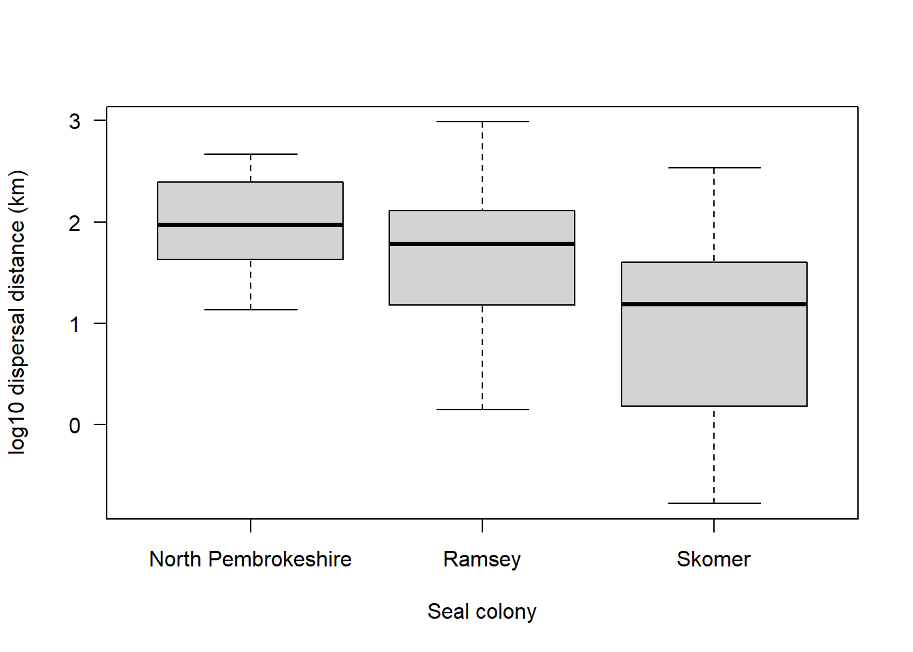
Given what you’ve just read, what might you deduce about these three different seal colonies?